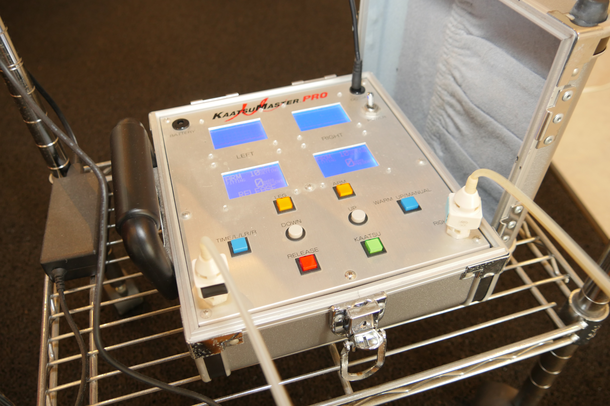
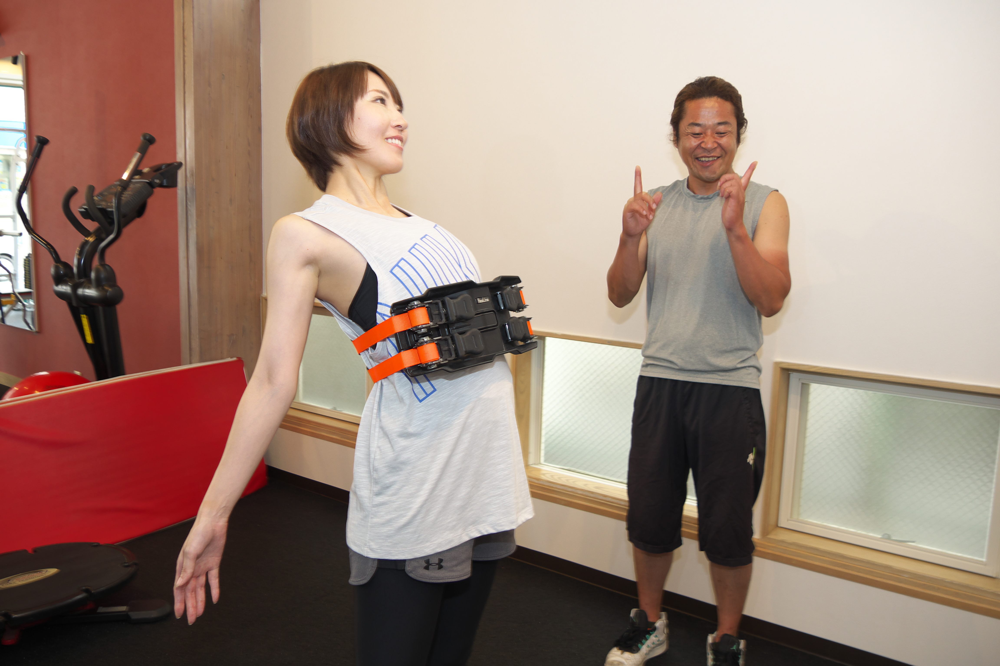

宇部市の完全予約制パーソナルジム
自分のペースで、
これからの身体づくり。
目的や体力、その日の体調に合わせて。
マンツーマンで運動をサポートします。

一人ひとりに合わせた運動
HOPEのトレーニング
体力や目標に合わせて、マンツーマンで丁寧にサポートします。


食習慣を見直す、12週間のサポートアプリ
SMART Diet
毎日の食事と向き合い、無理なく続く習慣づくりをサポートします。
現在、準備中
食事を記録し、学び、振り返る。
自分のペースで食習慣を整えるための
12週間サポートアプリを制作しています。
◉食事を記録毎日の食事を見つめる
—▤毎週の学び12週間のテーマを学ぶ
—↗振り返り変化や気づきを確認する
アプリは現在準備中です。公開時期などの詳細は、決まり次第お知らせします。
運動やセルフケアに
おすすめアイテム
トレーニングやセルフケアに役立つアイテムをご紹介します。
プレート式ダンベル
自宅での筋力トレーニングに。
ストレッチ・セルフケア用品
日々の身体のケアに。
商品情報と紹介リンクは、掲載内容が確定してから設定します。
初めての方へ
まずは体験トレーニングから
目的や身体の状態に合わせて、ご自身に合ったトレーニングを体験いただけます。
- 理想のカラダづくりコース
- カラダすっきりケアコース
- あなたにぴったり体験コース
トレーナープロフィール
HOPE代表 村田 健作
2006年に加圧インストラクター資格を取得。スポーツクラブなどでの指導経験を経て、2010年に宇部市でパーソナルエクササイズスタジオHOPEを開業しました。
運動経験や体力、目標、その日の体調を確認しながら、一人ひとりに合わせたマンツーマンの運動をご提案します。初めての方も、ご自身のペースでご相談ください。
加圧インストラクター認定：2006年7月6日
トレーニングや身体のケアに関する情報
ブログ
運動が初めての方から、体力づくりを続けたい方まで
HOPEは、こんな方にご利用いただいています
目的や体力に合わせて、無理のないペースで運動に取り組みます。
初めての運動施設でも、自分のペースで始めたい方
運動施設の利用経験がない方も、目的や体力に合わせて取り組みます。
健康維持や身体づくりを目的に運動を続けたい方
将来も元気に過ごすために、日々の健康維持や体力づくりを大切にしたい方。
減量や体重管理に取り組みたい方
体重や身体の変化が気になり、運動を生活に取り入れたい方をサポートします。
姿勢や柔軟性を高めたい方
姿勢を意識した運動やストレッチを通じて、身体を動かします。
筋肉・筋力を向上させたい方
今の体力に合わせたトレーニングで、筋力づくりを目指します。
ご利用者の傾向年齢層：30〜60代 ／ 男女比：約半々
体験トレーニングの内容を見る
山口県宇部市
アクセス・お問い合わせ
加圧パーソナルエクササイズスタジオHOPE所在地
駐車場：施設脇に車を1台停められます
〒755-0032
山口県宇部市寿町2丁目5-15
駐車場：施設脇に車を1台停められます
アクセス案内
JR琴芝駅HOPE
駅から徒歩約2分電話番号：0836-39-8200
営業時間：11:00〜22:00 ／ 完全予約制